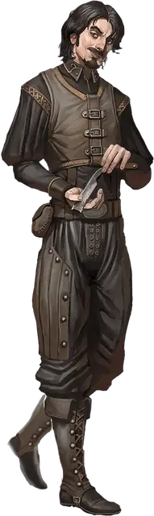

Орейот
Oreioth
Средний Гуманоид (Человек), хаотично-злой, именной НИП

Класс Доспеха 11 (14 с доспехами мага)
Хиты 39 (6к8 + 12)
Скорость 30 футов
| мод | спас | ||
|---|---|---|---|
| СИЛ | 8 | −1 | −1 |
| ЛОВ | 13 | +1 | +1 |
| ТЕЛ | 14 | +2 | +2 |
| мод | спас | ||
|---|---|---|---|
| ИНТ | 16 | +3 | +3 |
| МДР | 9 | −1 | +1 |
| ХАР | 11 | +0 | +0 |
Навыки Магия +5, Медицина +1, Расследование +5
Чувства пассивное Восприятие 9
Языки Общий, Бездны
Опасность 2 (450 опыта)
Бонус мастерства +2
Особенности
Мрачная жатва. Один раз за ход, когда Орейот убивает как минимум одно существо заклинанием 1-го уровня или выше, он восстанавливает себе количество хитов, равное удвоенному уровню этого заклинания.
Ускоренное оживление (перезаряжается после короткого или продолжительного отдыха). Если в радиусе 30 футов от Орейота умирает живое существо Маленького или Среднего размера, то в свой следующий ход он может сотворить заклинание восставший труп [animate dead], используя действие, а не стандартное время накладывания заклинания.
Использование заклинаний. Орейот является заклинателем 6-го уровня. Его базовой характеристикой является Интеллект (Сл спасброска от заклинаний 13, +5 к атакам заклинаниями). У него подготовлены следующие заклинания волшебника:
• Заговоры (неограниченно): леденящее прикосновение [chill touch], малая иллюзия [minor illusion], фокусы [prestidigitation], электрошок [shocking grasp]
• 1 уровень (4 ячейки): псевдожизнь [false life], доспехи мага [mage armor], волшебная стрела [magic missile], луч болезни [ray of sickness]
• 2 уровень (3 ячейки): корона безумия [crown of madness], туманный шаг [misty step]
• 3 уровень (3 ячейки): восставший труп [animate dead], прикосновение вампира [vampiric touch]
Действия
Кинжал. Рукопашная атака оружием: +3 к попаданию, досягаемость 5 фт., одно существо. Попадание: колющий урон 3 (1к4 + 1).
Описание
Орейот — худощавый чернобородый молодой дворянин из Врат Балдура — больше любит находиться среди мёртвых, нежели среди живых.
Присущая ему жестокость проявилась давно: едва научившись говорить, он уже ловил маленьких зверьков и убивал их самыми отвратительными и изобретательными способами, наслаждаясь своей властью над жизнью и смертью. Зажиточная семья Орейота стыдилась его, но, в надежде направить его любопытство и острый ум в более позитивное русло, они нашли для юноши наставника, которому платили за занятия. К несчастью, они не догадывались, что Орейот поступил в ученики к некроманту, который нуждался в помощнике для своих исследований.
Когда учитель перестал нуждаться в услугах Орейота, то отослал его прочь, наказав ему искать свой собственный путь в этом мире. Юноша отправился на север, по пути разоряя могилы и используя магию, чтобы запугивать и грабить всех, кто был слабее его. Гонимый из одного приличного города в другой, он, наконец, нашёл убежище в старом лагере бандитов неподалёку от Пикового Камня. Там, в уединении, он возобновил свои эксперименты.
Те немногие светские манеры, которыми обладал Орейот, теперь быстро им забываются. Окружив себя скелетами и зомби, вынужденными внимательно следить за каждой его прихотью, Орейот превратился в охваченного манией величия безумца и величает себя лордом Пикового Камня. Он уже едва узнаёт собственное имя, но лелеет мечту о королевстве, полном восставших из мёртвых под данных, где он был бы правителем.